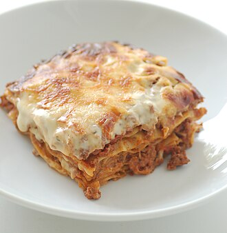

Lasagna soup

Description
Lasagnas are made of stacked layers of pasta, alternating with layers of a filling based on meat, tomato and other ingredients.
Ingredients
- 1 pound sweet Italian sausage
- ¾ quarters lean ground beaf
- ½ cup minced onion
- 2 cloves garlic, crushed
- 28 ounce crushed tomatoes
- 6.5 ounce canned tomato sauce
- 6 ounce tomato paste
- ½ cup water
- 2 tablespoons
- A
- A
- AA
- AAA
- AAA
- AA
- AA
- Aa
- AA
- AA
- ¾ cup grated Parmesan cheese
Steps
- Gather the ingredients
- AAA
- AAA
- AAA
- AAA
- AAA
- AAA
- AAA
- AAA
- Let the lasagna rest at room temperature for about 15 minutes before cutting; this helps it set and firm up.
Home